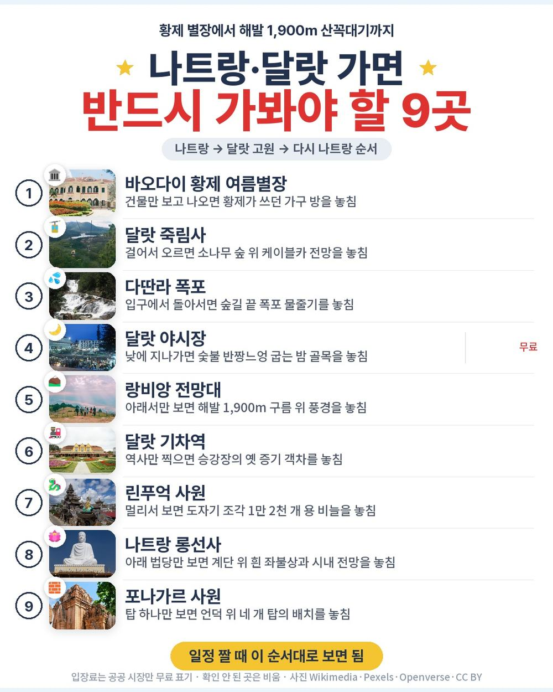
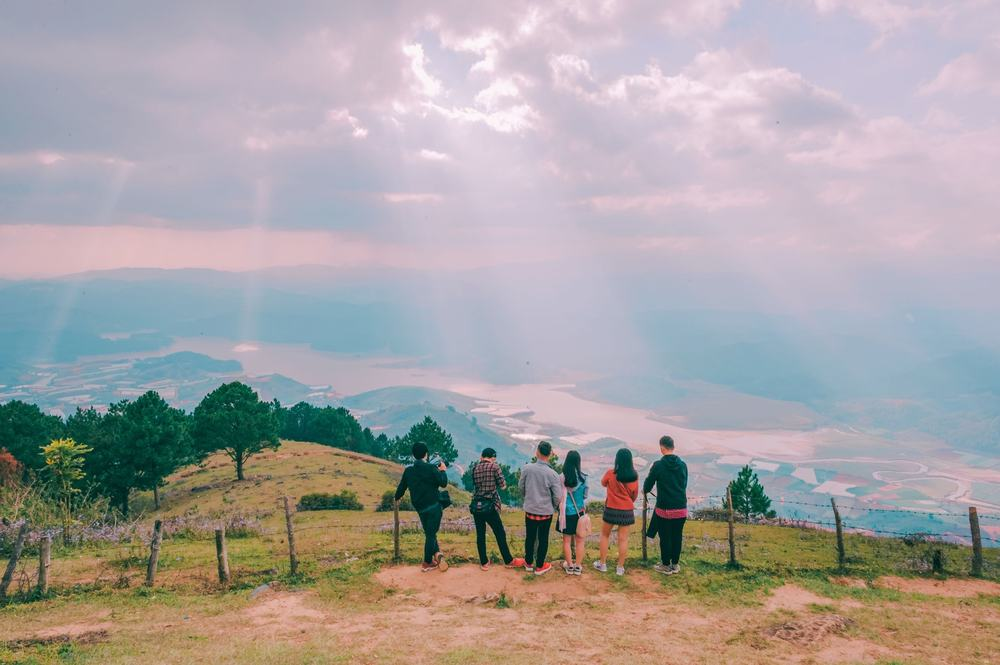
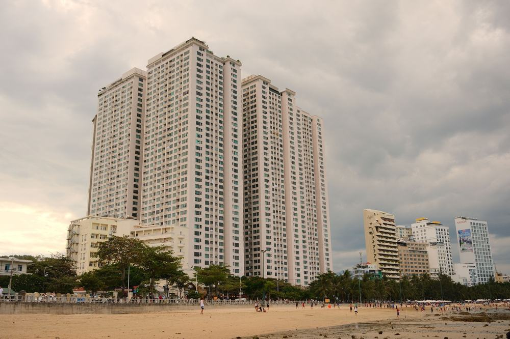
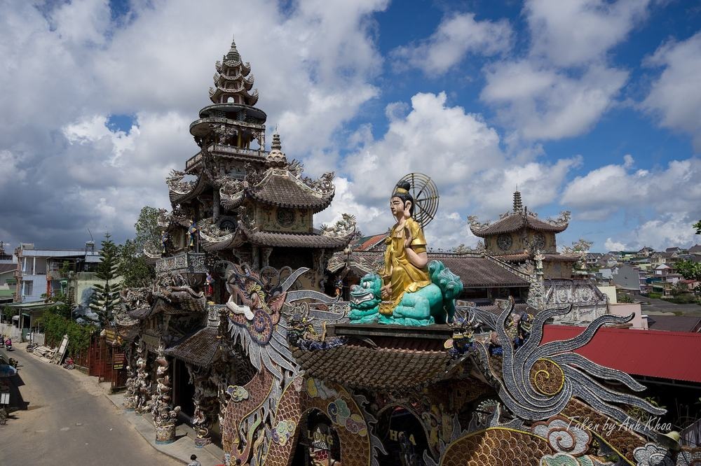
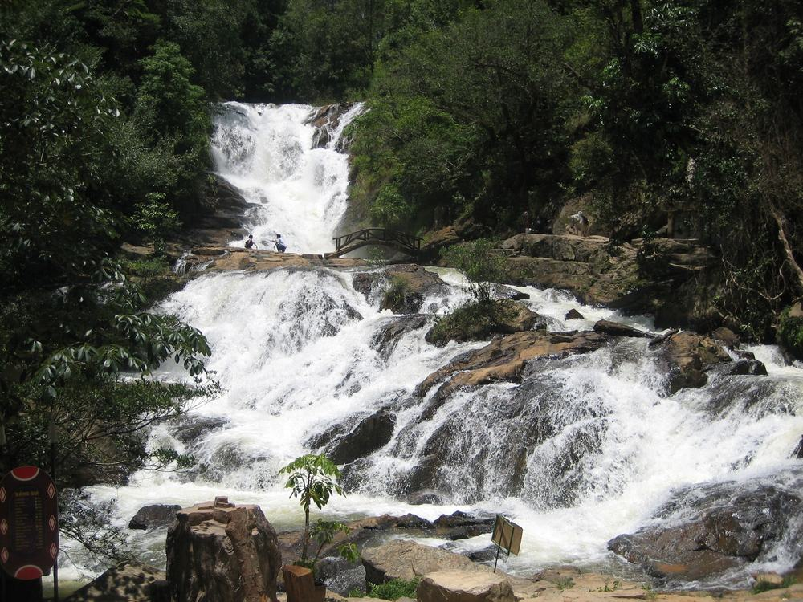

나트랑에서 하룻밤 자고 고원 도시 달랏으로 올라가 두 밤을 묵는 일정. 랑비앙 짚차와 죽림사 케이블카, 달랏 야시장 반짱느엉, 마지막 날 랍스터 무제한 씨푸드 뷔페까지 40만원대 값 안에 들어 있다는 게 이 상품의 특징.
직접 다녀온 후기가 아니라, 노랑풍선 일정표와 포함·불포함 원문을 하나씩 따져 본 글임.
결론 — 추천. 달랏 대표 명소를 버스로 편하게 돌고 마사지 60분과 랍스터 저녁까지 값 안에 있음. 다만 밤 비행기 두 번이 힘드신 분은 맞지 않음.
오늘 기준 출발일별 요금 보기
https://naver.me/xhPGfW90

| 항목 | 내용 |
|---|---|
| 가격 | 1인 429,900원 (성인 · 12월 출발 기준) · 2인 859,800원 |
| 여행사 | 노랑풍선 |
| 항공 | 이스타항공 직항 · 인천 20:50 → 깜란 00:55 / 깜란 01:55 → 인천 08:50 |
| 숙소 | 나트랑 1박(베스트웨스턴·호라이즌·빈펄 비치프론트 중 예정) + 달랏 2박(멀펄·라달랏 등 예정) · 각 동급 변경 가능 |
| 일정 | 3박 5일 · 버스 · 한국어 가이드 · 쇼핑 3회 · 선택관광 있음 · 최소 4명 |
▶ 내 출발일 오늘 기준 요금 확인 (제휴 링크 · 예약 시 수수료를 받으며 가격은 같습니다)
▶ 10월 24일 기준 나트랑 패키지 최저 29만 9,900원부터 — 출발일별 값 한 화면에: 비교 페이지
같은 일정을 진에어로 가는 상품은 1인 369,900원임(10월 24일 기준 · 출발일마다 다름).
| 번호 | 내용 | 한 줄 답 |
|---|---|---|
| 1 | 이 값에 들어 있는 것 | 달랏 2박·랍스터까지 |
| 2 | 현장에서 더 낼 돈 | 1인 50달러 |
| 3 | 일정과 체력 | 버스 약 11.7시간 |
| 4 | 자유여행으로 짜면 | 1인 약 75만원 |
| 5 | 맞는 분 · 안 맞는 분 | 밤 비행기 괜찮은 분 |

42만 9,900원 안에 든 걸 세어 보면 이렇다.
- 이스타항공 인천–깜란 직항 왕복, 유류할증료·세금 포함
- 나트랑 호텔 1박과 달랏 호텔 2박(2인 1실)
- 2일차 아침부터 4일차 저녁까지 아홉 끼. 낌자식당 해물 샤브샤브, 안하우스 분짜·반쎄오, 마지막 저녁은 응온갤러리 랍스터 무제한 씨푸드 뷔페
- 전신 마사지 60분, 달랏 야시장 반짱느엉에 맥주나 음료 한 잔
- 한국어 가이드, 전용 버스, 여행자보험
관광은 달랏에 몰려 있음.
- 바오다이 황제 여름별장 · 죽림사(케이블카 편도 포함) · 다딴라 폭포 · 쑤언흐엉 호수(차창)
- 랑비앙 전망대(짚차 또는 7인승) · 달랏 기차역 · 린푸억 사원 · 달랏 대성당
- 나트랑 대성당(차창) · 롱선사 · 포나가르 사원
쇼핑은 마지막 날 나트랑에서 세 번, 침향·노니와 커피, 잡화 순으로 한 곳에 약 1시간씩 들름. 선택관광은 고르는 만큼이고, 안 하면 근처에서 기다리면 됨. 다딴라 폭포 레일바이크도 선택관광이라 30달러가 따로 듦.

호텔은 나트랑 한 밤, 달랏 두 밤. 첫날은 새벽 1시쯤 깜란에 내려 바로 들어가는 밤이라 짧게 쉬는 정도이고, 달랏은 같은 호텔에서 연달아 두 밤 자니 짐을 한 번만 풀면 됨. 두 곳 모두 더블베드 방이 많고 방 종류는 고를 수 없다고 적혀 있음.
| 항목 | 금액 | 비고 |
|---|---|---|
| 가이드·기사 경비 | 100달러 | 1인 50달러 · 성인·아동 같음 |
| 마사지 팁 · 매너팁 | 고르는 만큼 | 매너팁은 2~4달러가 관례로 안내됨 |
| 선택관광 | 고르는 만큼 | 알뜰형 180달러 · 레일바이크 30달러 등 |
| 싱글룸 | 200,000원 | 혼자 방을 쓸 때만 |
| 연말·공휴일 호텔 추가요금 | 해당 날짜만 | 달랏 룸당·박당 6만원 · 갈라디너 1인 8만원 |
| 합계 (2인) | 100달러 (반드시 내는 돈) | 1달러 1,400원이면 약 14만원 |
두 사람이면 상품가 85만 9,800원에 경비 100달러를 더해 약 100만원. 크리스마스나 연말에 달랏에서 자는 날짜라면 호텔 추가요금과 갈라디너가 붙으니 예약 때 같이 확인하는 편이 좋음.

| 일차 | 가는 곳 | 버스 | 걷기 | 점심 · 저녁 |
|---|---|---|---|---|
| DAY 1 | 인천 3층 미팅 → 20:50 출발 → 00:55 깜란 도착 → 나트랑 호텔 | 약 40분 | 적음 | 없음 |
| DAY 2 | 달랏 이동 → 바오다이 별장 → 죽림사 케이블카 → 다딴라 폭포 → 마사지 → 야시장 | 약 4.5시간 | 보통 | 해물 샤브샤브 · 현지식 |
| DAY 3 | 랑비앙 짚차 → 달랏 기차역 → 린푸억 사원 → 달랏 대성당 | 약 1.5시간 | 보통 | 분짜·반쎄오 · 한식 |
| DAY 4 | 나트랑 이동 → 쇼핑 3회 → 롱선사 → 포나가르 사원 → 랍스터 뷔페 → 공항 | 약 5시간 | 보통 | 현지식 · 랍스터 뷔페 |
| DAY 5 | 01:55 출발 → 08:50 인천 | — | 적음 | 없음 |
버스는 모두 약 11.7시간. 나트랑과 달랏 사이가 한 번에 약 3시간 30분이라, 둘째 날과 넷째 날이 긴 날임. 산을 넘는 고갯길이니 멀미가 있으면 약을 미리 챙기는 편이 나음.
더 신경 쓸 건 밤 비행기. 갈 때는 저녁 8시 50분에 떠나 새벽 1시쯤 내리고, 올 때는 넷째 날 일정을 다 마친 뒤 새벽 1시 55분에 떠나 아침 8시 50분 인천에 도착함. 넷째 날은 호텔 없이 공항으로 가는 날이라 그날 저녁 랍스터 뷔페가 마지막 일정. 무릎이 불편하신 분은 롱선사 계단 앞에서 가이드에게 미리 말해 두면 편함.
같은 목적지 다른 여행사 패키지, 쇼핑·선택관광·가이드 경비까지 비교
https://pkg-lab.com/go/?q=%EB%82%98%ED%8A%B8%EB%9E%91+12%EC%9B%94&utm_source=blog&utm_medium=post&utm_campaign=daily

| 항목 | 금액 | 근거 |
|---|---|---|
| 인천–깜란 왕복 항공 | 289,900원 | ICN↔CXR 직항 왕복 1인 28만 9천원 (앞으로 두 달 직항 운임 하위 25% 값 · 2026-10-24 마이리얼트립 조회) |
| 호텔 3박 | 150,000원 | 나트랑 1박 + 달랏 2박, 2인 1실 1인분 (추정) |
| 식사 (9끼) | 120,000원 | 랍스터 뷔페 1회 포함 (추정) |
| 마사지 60분 | 25,000원 | 현지 스파 1회 (추정) |
| 입장 · 케이블카 · 짚차 | 50,000원 | 랑비앙·죽림사 케이블카 등 (추정) |
| 공항 이동 · 나트랑↔달랏 차량 | 100,000원 | 차량 대절 왕복, 2인 나눔 (추정) |
| 여행자보험 · 유심 | 15,000원 | 5일 기준 (추정) |
| 가이드 | — | 자유여행은 없음 |
| 합계 | 약 749,900원 |
혼자 짜면 1인 약 75만원. 패키지는 42만 9,900원에 경비 50달러를 더해도 50만원 안팎이라 패키지가 25만원쯤 덜 듦. 쇼핑 세 번에 들르는 시간은 그 값 안에 들어 있는 셈.
이동도 차이가 큼. 나트랑에서 달랏까지는 고개를 넘어 버스로 약 3시간 30분 걸리는 길이라, 차를 따로 잡지 않으면 오가기 어려움. 패키지는 그 길을 전용 버스와 기사가 맡음.
| 맞는 분 | 안 맞는 분 |
|---|---|
| 40만원대에 달랏 두 밤과 랍스터 저녁까지 원하는 분 | 밤 비행기 두 번이 힘드신 분 |
| 달랏 고원 명소를 버스로 편하게 돌고 싶은 분 | 나트랑 바다에서 쉬는 시간을 원하는 분 |
| 밤 비행기로 휴가를 아끼고 싶은 분 | 쇼핑 일정이 아예 없길 원하는 분 |
Q. 나트랑 패키지 쇼핑은 몇 번인가요?
A. 세 번. 마지막 날 나트랑에서 침향·노니, 커피, 잡화 매장에 들르고 한 곳에 약 1시간씩 머묾. 사는 건 자유임.
Q. 나트랑 패키지 가이드 경비는 따로 내나요?
A. 냄. 가이드·기사 경비가 1인 50달러이고 현지에서 냄. 성인과 아동이 같은 금액.
Q. 달러는 어떻게 준비하면 되나요?
A. 1·5·10·20달러 같은 소액권이 편함. 경비와 선택관광, 매너팁을 생각해서 바꾸면 되고, 야시장에서 쓸 동화는 현지에서 가이드나 환전소를 통해 바꾸면 된다고 안내돼 있음.
나트랑에서 내려 달랏 고원으로 올라가, 짚차와 케이블카로 산과 숲을 보고 마지막 저녁은 바닷가 도시에서 랍스터로 마무리하는 일정. 밤 비행기 두 번과 쇼핑 세 번이 괜찮다면 값에 비해 들어 있는 게 많은 구성임.
출발일마다 값이 달라서, 가시려는 날짜 요금부터 확인해 보면 됨.
오늘 기준 출발일별 요금 보기
https://naver.me/xhPGfW90
이 글에는 네이버 제휴 링크가 포함되어 있으며, 링크를 통해 예약하시면 일정 수수료를 받습니다. 가격은 동일합니다. 가격과 구성은 2026년 10월 24일 확인 기준이며 출발일에 따라 달라질 수 있습니다.
▶ 이 상품, 영상으로 보기 (유튜브)
▶ 나트랑 패키지 오늘 값 나란히 비교
▶ 같은 목적지 다른 여행사 패키지, 쇼핑·선택관광·가이드 경비까지 비교: pkg-lab.com
.jpg){kind=link}